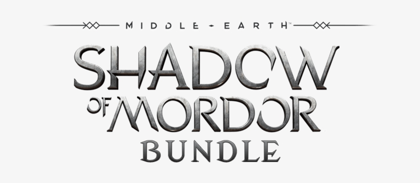

Middle-earth: Shadow of Mordor is a third-person open world action-adventure video game in which the player controls Talion, a ranger who seeks vengeance on the forces of Sauron after his wife and son are killed by those who lead them.